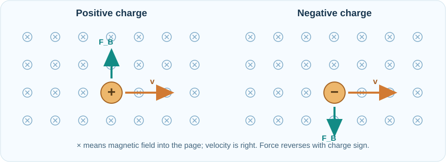
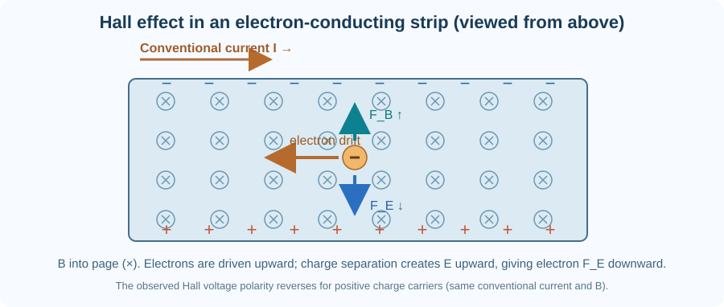

First ask what field a moving charge produces. Then investigate the magnetic force it experiences. Discover the geometry, explain the physics, practise and check your reasoning.
Field source → force → circular motion → electric + magnetic fields → Hall effect
Work through the sections in order. Think or discuss before revealing each answer. You do not need to type any discussion answers. Keep the worksheet beside you for written reasoning and calculations. Try the interactive visualizations before using the final summary.
College Board learning objectives: 12.2.A and 12.2.B. Force calculations use perpendicular, parallel or antiparallel velocity–field configurations. Other angles are qualitative only.
A moving charge is the source of a magnetic field. To find B at observation point P, use its velocity and the displacement from the charge to P. This is not the same as asking for the force on that charge.
Do not confuse the two problems
Source question: A charge moves with velocity v. What magnetic field B does it produce at another point P?
Force question: A charge enters an external field B. What force FB acts on it?
Interactive A · Field made by a moving charge
Move P above, below and along the velocity line. Switch charge sign and speed. Predict B first; then check the indicator.
This field explorer shows a 2D section and B perpendicular to its plane. It is a qualitative/AP-supporting model, not a numerical requirement.
Discussion questions · Think, then reveal
01
What is the difference between a charge at rest and a charge moving relative to an observer?
A stationary charge produces an electric field. A moving charge produces a magnetic field as well. Electric and magnetic fields are related; whether a charge is moving depends on the reference frame.
02
What is the source of the magnetic field in this topic?
A single moving charged object can produce a magnetic field. Later, current in a wire is modeled as many moving charges.
03
At a point P, which features of a moving charge determine its magnetic field?
The magnetic field depends on the velocity of the charged object, its charge sign and magnitude, and the distance and direction from the charge to point P. Direction matters as well as speed.
04
How do you find the direction of B produced by a moving positive charge?
Point your right-hand index finger along the charge’s velocity, and your middle finger along the displacement from charge to observation point P. Your thumb gives the direction of B at P for a positive charge. For a negative source charge reverse the direction. (An equivalent curl method is acceptable.)
05
A positive charge moves right. Point P is above its path. Is B at P into or out of the page?
Out of the page (⊙). Velocity is right (+x), displacement toward P has an upward component (+y), and the right-hand-rule direction is +z. For a negative charge it is into the page (⊗).
06
Where is the produced magnetic field largest, and when is it zero?
For fixed charge magnitude, speed and distance, the field is largest when the velocity and the displacement to P are perpendicular. It is zero when they are parallel or antiparallel in the point-charge model.
07
How should the magnetic field change if the charge moves faster or P is moved farther away?
Increasing the charge’s speed strengthens the field at a fixed appropriately oriented point. Increasing the distance weakens it. In AP 2, reason about these changes qualitatively; a numerical point-charge field equation is not on the AP Physics 2 sheet.
08
What is the key difference between the two right-hand rules used in Topic 12.2?
Field produced by a charge: use velocity and the displacement to the observation point to predict B. Force on a charge: use velocity and the external magnetic field to predict FB. These are distinct questions and distinct vector pairs.
You have just learned how one moving charge creates a magnetic field. Rotate the diagrams below to compare that field with the patterns around a straight current-carrying wire, bar magnet, single current loop and solenoid. The first case is part of Topic 12.2.A; the others connect back to Topic 12.1 and preview Topic 12.3.
Look for three things
1. Which way do the magnetic field arrows point? 2. Are the field lines circular, dipole-like, or nearly parallel inside a coil? 3. What changes if the charge sign or conventional current direction is reversed?
Important: These arrows represent the field produced by each source—not the magnetic force on a test charge. We study forces in Section B.
Moving positive charge along +z: B circulates counterclockwise as viewed from +z; changing the charge to negative reverses B if velocity is unchanged.
Straight wire: circular field lines surround the conventional current direction, reversing when the current reverses.
Bar magnet: field lines point N→S outside and S→N inside.
Loop and solenoid: use the current-direction right-hand rule; the magnetic field points along the axis through the centre. Solenoid field lines are approximately parallel inside its central region.
The wire, current loop and solenoid are included here as visual previews. Detailed learning and practice for current-carrying conductors will be in 12.3.
LEARNING OBJECTIVE 12.2.B
B. When does a magnetic force act?
The external magnetic field may exert a force on a moving charged particle. Force magnitude depends on charge, speed, field strength and the velocity–field angle.
AP magnetic-force equation
FB = |q|vB sin θ
FB force magnitude (N); |q| magnitude of charge (C); v speed (m/s); B magnetic field strength (T); θ angle between v and B.
Only numerical θ = 0°, 90°, 180° are required for this equation in AP Physics 2. For intermediate angles, reason qualitatively.
Result: 1.1 × 10−13 N. The force direction requires a separate right-hand-rule argument.
Discussion questions · Think, then reveal
09
Does a magnetic field always exert a force on a charge?
No. A stationary charge has no magnetic force. A moving charge has no magnetic force if its velocity is parallel or antiparallel to the magnetic field. Otherwise, a magnetic force can act.
10
Which three quantities determine the magnetic force magnitude for perpendicular motion?
For v perpendicular to B, the magnetic force magnitude is FB = |q|vB: charge magnitude, speed and magnetic field magnitude. FB is measured in newtons (N).
11
Why do we use |q| when determining a force magnitude?
Force magnitude must be nonnegative. The sign of q changes force direction, not the magnitude when |q|, v and B are unchanged. The AP sheet writes FB = qvB sinθ; for magnitude, interpret q as charge magnitude.
12
What is θ in the magnetic-force equation?
θ is the angle between the particle’s velocity vector and the magnetic field vector. It is not the angle between force and field. The expression is FB = |q|vB sinθ.
13
What are the force magnitudes when the angles between v and B are 0°, 90° and 180°?
At 0° or 180°, sinθ = 0, so the magnetic force is zero. At 90°, sinθ = 1, so it is maximal: FB = |q|vB. These are the quantitative angle cases required in AP Physics 2.
14
A charged particle’s speed doubles while its velocity remains perpendicular to B. What happens to F_B?
The force magnitude doubles, provided the charge magnitude and field strength remain unchanged. FB ∝ v for perpendicular motion.
15
A charge of magnitude 1.60 × 10⁻¹⁹ C moves at 2.0 × 10⁶ m/s, perpendicular to B = 0.35 T. Find the magnetic force magnitude.
The force on a moving charge is perpendicular to both its velocity and the magnetic field. A negative charge reverses the positive-charge right-hand-rule result.

Same velocity and magnetic field; opposite charge signs give opposite force directions.
Three-finger method: right-hand index = velocity v; middle = external field B; thumb = force on a positive charge. Reverse for negative q. For zero force, do not assign a direction.
Interactive B · Prediction questions and particle motion
This is a lesson-specific copy of our Version 6 visualizer. Start with Charge questions; then use Particle motion later in Section D. The original general-purpose file has not been changed.
If velocity is right and B is into the page, what is the force direction for a positive charge?
Up the page. Set index along v (right), middle along B (into page), thumb points upward for positive q.
17
How does the direction change for an electron with exactly the same velocity and B?
Down the page. Apply the right-hand rule for a positive test charge and reverse the answer for the electron’s negative charge.
18
How do we show vectors into and out of the page?
⊗ or × means into the page (the tail of an arrow). ⊙ or • means out of the page (the arrow tip approaching you). Use the markings consistently.
19
If a proton travels right and a field points right, which direction is its magnetic force?
There is no magnetic force, because v and B are parallel. Do not assign a force direction when its magnitude is zero.
20
A positive particle moves up the page with B out of the page. Predict its magnetic force direction.
Right (+x): up (+y) crossed with out of page (+z) is right (+x). A negative charge reverses this.
21
How would you determine an unknown charge sign if v, B and the observed magnetic force are known?
Find the right-hand-rule direction for a hypothetical positive charge. If the measured force agrees, the charge is positive; if it is opposite, negative. Confirm the force is nonzero.
22
Can magnetic force point parallel to v or B?
No. Whenever a nonzero magnetic force exists, it is perpendicular to both v and B. The force is not normally along the magnetic field lines.
LEARNING OBJECTIVE 12.2.B
D. What does magnetic force do to motion?
A magnetic force alone does no work: it can bend a trajectory but not change the particle’s kinetic energy. Perpendicular entry gives circular motion in a uniform field.
Why a circle? Why constant speed?
Because FB is perpendicular to v, the magnetic force changes direction rather than speed; magnetic work is zero. For v perpendicular to a uniform B, the inward force is the magnetic force itself.
|q|vB = mv² / r
Rearranging gives r = mv/(|q|B). This radius relationship is derived from two familiar forces, and is not a separately supplied magnetic equation.
Visualize it: In the Version 6 copy above, choose Particle motion. Compare proton, electron and helium-ion species, and switch between circular and helical paths. The rendered view scales to fit, but the displayed radius is the calculated physical radius.
Discussion questions · Think, then reveal
23
Can a magnetic force change a particle’s speed? Explain.
An isolated magnetic force does no work on a charged particle because it is perpendicular to the particle’s instantaneous velocity. It changes direction, not speed or kinetic energy.
24
What happens if a charged particle enters a uniform B field with v perpendicular to B?
It can follow a circular path, with the magnetic force always directed toward the center. The magnetic force provides the centripetal force; it is not an additional force.
25
Derive an equation for the radius r of the circular orbit.
For perpendicular motion set magnetic force equal to required centripetal force: |q|vB = mv²/r. Rearrange to r = mv/(|q|B). This is a derived relationship, not a separately listed magnetism equation on the AP Physics 2 sheet.
26
For the same particle and B, what happens to circular radius if speed doubles?
Radius doubles. r ∝ v, keeping m, |q| and B constant. Speed remains constant along each individual circular path.
27
For the same charge, speed and B, what happens if the particle’s mass doubles?
Radius doubles, since r ∝ m. A more massive particle bends less sharply under the same magnetic-force magnitude.
28
A proton (m = 1.67 × 10⁻²⁷ kg) travels at 2.0 × 10⁶ m/s perpendicular to B = 0.50 T. Calculate its circular radius.
What happens when velocity has a component parallel to a uniform magnetic field?
The parallel velocity component continues unchanged; the perpendicular component produces circular motion. Their combination creates a helical path. A purely parallel or antiparallel path is straight.
LEARNING OBJECTIVE 12.2.B
E. Electric and magnetic fields together
The electric and magnetic forces are independent contributions to net force. They may reinforce each other or cancel.
Force balance in crossed fields
Find electric force FE = |q|E and magnetic force FB = |q|vB separately. For fields arranged so the forces oppose, undeflected motion is possible when they have equal magnitude.
|q|E = |q|vB → v = E/B
For example, E = 2.4 × 104 N/C and B = 0.030 T give v = 8.0 × 105 m/s. Check the directions of both forces before equating their magnitudes.
Discussion questions · Think, then reveal
30
How are electric force and magnetic force on a moving charged particle different?
An electric field can exert FE = qE even on a stationary charge; its force can change kinetic energy. Magnetic force depends on the charge’s motion relative to B, is perpendicular to its velocity, and does no work by itself.
31
What happens when electric and magnetic fields act in the same region?
The charge experiences independent electric and magnetic forces. Determine each force separately and add the forces as vectors to obtain the net force.
32
How can a moving charge continue undeflected through crossed electric and magnetic fields?
If the electric and magnetic forces are opposite and equal, the net force is zero. For perpendicular motion with appropriate directions: |q|E = |q|vB, so v = E/B (a derived relation).
33
A velocity selector has E = 2.4 × 10⁴ N/C and B = 0.030 T. What speed travels straight through if electric and magnetic forces oppose?
Balance: |q|E = |q|vB. Rearrange: v = E/B = (2.4 × 10⁴)/(0.030). Answer: 8.0 × 10⁵ m/s. The direction of each force must be verified separately.
LEARNING OBJECTIVE 12.2.B
F. The Hall effect, step by step
A conductor with moving charge carriers can develop a transverse voltage when a magnetic field pushes those carriers to one side.

Hall effect: moving charge carriers separate until the electric force balances the magnetic force across the conductor (schematic; electron carriers).
Four-step explanation
Current: charged carriers drift through the conductor.
Magnetic deflection: B has a perpendicular component; the moving carriers experience FB sideways.
Charge separation: opposite edges become differently charged, creating a sideways electric field and potential difference.
Steady state: the transverse electric and magnetic forces balance, so further separation stops.
Carrier polarity changes which edge becomes positive; therefore Hall-voltage polarity is informative.
Discussion questions · Think, then reveal
34
What is the Hall effect?
A transverse potential difference develops across a conducting material when moving charge carriers experience a sideways magnetic force from an external B field with a perpendicular component.
35
What is the first physical step in the Hall effect?
Charge carriers moving through the conductor experience a magnetic force sideways (perpendicular to the carrier drift velocity and B), so positive or negative charges begin to accumulate on one side.
36
How does the growing charge separation affect the carriers?
Separated charges produce a transverse electric field. The electric force due to this field opposes the magnetic deflection. Charge separation builds until transverse forces balance in steady state.
37
In a conductor with electrons moving left and B into the page, which side gains electrons?
The magnetic force on electrons is upward. Electrons accumulate at the upper edge (negative), leaving the lower edge positive. The Hall electric field points upward; electric force on electrons points downward.
38
Why can Hall voltage polarity reveal the type of dominant charge carrier?
For fixed conventional current and magnetic-field directions, positive and negative carriers accumulate opposite polarities across the conductor. This changes the sign of the measured Hall voltage.
LEARNING OBJECTIVE 12.2.A/B
G. Consolidate the key ideas
Apply the two right-hand-rule situations correctly, explain motion and stay within the specified AP quantitative boundary.
AP boundary: For numerical magnetic-force calculations, use only 0°, 90° and 180° between v and B. General-angle discussion is qualitative. The optional point-charge field indicator is not an AP 2 equation to memorize.
Discussion questions · Think, then reveal
39
List four frequent mistakes in Topic 12.2 and correct them.
(1) Treating the field produced by a charge as the force on it: use the correct vector pair. (2) Forgetting to reverse force direction for a negative charge. (3) Claiming B speeds the particle up: it changes direction, not speed. (4) Adding a separate “centripetal force”: FB is the inward net force in the circular-motion case.
40
Which magnetic-force angles does AP Physics 2 expect you to calculate numerically?
Only 0°, 90°, and 180° between v and B for numerical force calculations. Other angles may be discussed qualitatively, including whether force is zero, maximum or intermediate.
Multiple-choice practice
28 questions · four answers each · randomized answer positions · one-line explanations.
For immediate feedback, answer and check each question. For end-only feedback, submit all questions first and then see your score and explanations. Both modes require an attempted answer before its explanation is shown.
Next Unit Prep · 12.3
When you finish, prepare for magnetic fields produced by currents.
Draw the magnetic field around a long straight current-carrying wire with current out of the page, showing the direction arrows.
Repeat for current into the page. Explain your right-hand rule.
Sketch a single circular current loop and a solenoid; describe the magnetic field direction near their axes.
Research why a current-carrying wire can experience a force in an external magnetic field.
Finish · consolidate your learning
After completing the activities, use the one-page Topic 12.2 summary to check the essential ideas, equations and direction conventions. The worksheet PDF provides space for your explanations and calculations.